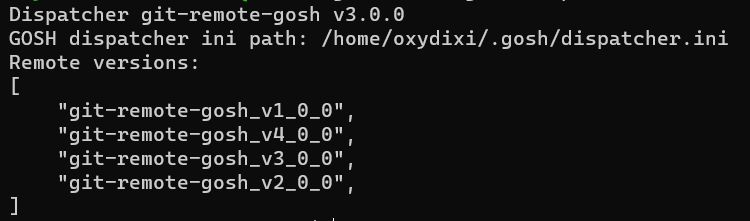
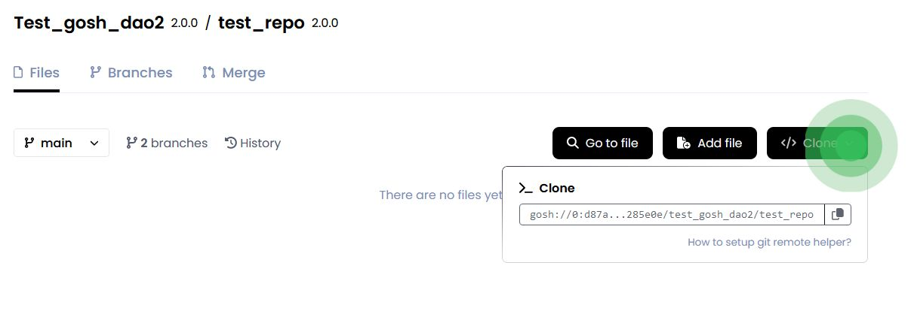

Git Remote Helper
Git Remote Helper (this is a standard mechanism for working with non-standard code storages) is a git-client helper to interact with remote repositories hosted on the GOSH blockchain.
Installation
Install helper using the installation script
If you have macOS or Linux, you can use this installation method.
wget -O - https://raw.githubusercontent.com/gosh-sh/gosh/dev/install.sh | bash -s
If you have Windows, you can use the installation methods below.
Checking the installation results.
Install helper from binary releases
-
Follow the
linkand download the version of the Git Remote Helper for the required operating system (macOS, Linux, Windows). -
Extract files from tar-file
(e.g. for Linux x64):
tar xvf git-remote-gosh-linux-amd64.tar -
Move binary files to any searchable path
(e.g. /usr/local/bin):
mv git-remote-gosh /usr/local/binmv git-remote-gosh_v?_0_0 /usr/local/binand move dispatcher.ini to ~/.gosh/ folder:
mkdir ~/.gosh || mv dispatcher.ini ~/.gosh/
Checking the installation results.
Install helper from source
-
Prerequisites:
- Rust v1.66+
- Protobuf Compiler
gitmakegcc-
opensslNote
For Windows users:
make sure that the appropriate Perl version is installed for your build environment.
-
Clone
goshrepository. -
Go to the
goshdirectorycd goshThen build all the necessary components:
cd v1_x/git-remote-gosh && make installcd v2_x/git-remote-gosh && make installcd v3_x/git-remote-gosh && make installcd v4_x/git-remote-gosh && make installcd gosh-dispatcher && make installInfo
After building all the components, the finished binary files will be located in the
~/.cargo/bindirectory.You need to create a configuration file for the Git Remote Helper:
~/.gosh/dispatcher.iniwith the following content:
git-remote-gosh_v1_0_0git-remote-gosh_v2_0_0git-remote-gosh_v3_0_0git-remote-gosh_v4_0_0
Verifying the installation resulte
You can check the correctness of the configuration file by running the command:
git-remote-gosh dispatcher_ini
As a result, you will see the following:

Run the following command to make sure it's available:
which git-remote-gosh
If the Git Remote Helper is not available, then add path with git-remote-gosh
for availability via $PATH:
export PATH="~/.cargo/bin:$PATH"
Setup user account
When creating your account in GOSH Web or Docker extension you received a GOSH wallet address and keys.
To be able to push to Gosh repositories, you need to set up these credentials for Git Remote Helper.
The Git Remote Helper expects that the wallet credentials are in the file ~/.gosh/config.json or in the file specified in the environment variable GOSH_CONFIG_PATH,
for example:
{
"primary-network": "mainnet",
"networks": {
"mainnet": {
"user-wallet": {
"profile": "USERNAME",
"pubkey": "655b120c996b4f69c686cb3b769fbdfa0141006ce6a88dc012bf323c30265924",
"secret": "6bdc38c0ecd6f74399f6b8ff2486f0e2abb32fca712caf3e4a47ef4a2634c4e8"
},
"endpoints": [
"https://bhs01.network.gosh.sh",
"https://eri01.network.gosh.sh",
"https://gra01.network.gosh.sh"
]
}
}
}
Use GOSH as remote
For correct usage of the helper you should refer to remote in the following form:
gosh://SYSTEM_CONTRACT_ADDRESS/DAO_NAME/REPO_NAME
Set remote for existing local repository
Сopy the URL to configure the remote from the web interface, after creating a repository on GOSH.

Info
The address of the System Contract depends from the GOSH version of contracts.
for example setup for version 3:
git remote add origin gosh://0:8b1cbcd8b08a6c384e0db0d3513898d36203fced3e141a7f6b99cc580738fc22/my-DAO/my-repo
Clone repository
git clone gosh://0:8b1cbcd8b08a6c384e0db0d3513898d36203fced3e141a7f6b99cc580738fc22/my-DAO/my-repo
Ever SDK protocol
By default, the SDK in Git Remote Helper uses the WebSocket protocol. If for some reason this does not suit you (for example, you are using Alpine Linux), then set the environment variable GOSH_PROTO to http
export GOSH_PROTO=http